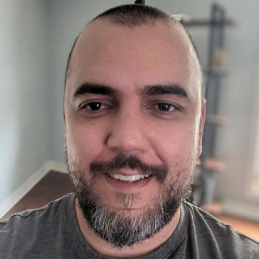

{{#extend "default"}}
    {{#content "main"}}
        <div class="gr-about-how">
            <section>
                <div class="container">
                    <div>
                        <div class="row text-left pb-4 pb-md-5">
                            <h3 class="text-gradient">Organizando e transformando o aprendizado em
                                TI.</h3>
                        </div>
                        <div class="row pb-3 pb-md-5">
                            <p class="text-lead pb-2">Acreditamos que não existe falta de informação e
                                ou escolas, cursos ou bootcamps, mas sim falta de organização de
                                informações já disponíveis e por onde começar, o que aprender e
                                quando, para guiar iniciantes em TI com conteúdo de alta qualidade,
                                e assim, ajudar a suprir a demanda crescente de profissionais
                                altamente capacitados no mercado.</p>
                            <p class="text-paragraph pb-2">O Grimore, foi criado para atacar o problema
                                de falta de profissionais capacitados no mercado de uma maneira
                                diferente, ao invéz criamos nosso próprio conteúdo, fazemos uso de
                                conteúdo aberto e público para criar linhas de aprendizado contendo
                                diferentes típos de media de maneira organizada e estruturada, oque
                                nos permite prover conteúdo de alta qualidade para aqueles que
                                desejam ingressar no setor de TI.
                            </p>
                            <p class="text-paragraph pb-2">
                                Nossa equipe é formada por calouros do bacharelado em Técnologia da
                                Informação pela PUC Minas, apaixonados por TI e técnologia que sabem
                                bem sobre o quanto é difícil navegar o mar de informação e conteúdo
                                disponível na web quando se está começando no setor, com o objetivo
                                de facilitar para futuros iniciantes em TI.
                            </p>
                        </div>
                    </div>

                    <div class="d-flex flex-column">
                        <div class="row text-left pb-3 pb-lg-5">
                            <h4>Nossa Equipe</h4>
                        </div>
                        <div class="row text-center text-lg-start pb-4">
                            <div class="col-lg-4 order-0 order-lg-0">
                                
                            </div>
                            <div class="col-lg-8 order-1 order-lg-1">
                                <h5 class="text-gradient">Jair Milanes</h5>
                                <p class="text-legend">Senior Full Stack Tech Lead</p>
                                <p class="text-paragraph">
                                    Atualmente cursando Tecnologia da Informação na PUC Minas, em
                                    seus 14 anos de aprendizado e carreira como Desenvolvedor de
                                    Software, não teve a chance de concluir sua graduação
                                    enteriormente e sempre dependeu de contéudo gratuito para
                                    inpulsionar sua carreira, apaixonado por software e suas
                                    possibilidades, tem como um de seus objetivos ajudar novos
                                    profissionais a alcançar suas conquistas com maior facilidade
                                    sem alta dependência financeira.
                                </p>
                                <p class="text-paragraph">
                                    Atualmente trabalha como consultor para a Associasão Médica dos
                                    Estados Unidos, e também passou oir empresas da Globo, Uol e foi
                                    migrado para o Canadá em 2016 pela Broadband TV, empresa
                                    conseituada no ramo de conteúdo digítal mundialmente.
                                </p>
                            </div>
                        </div>
                        <div class="row text-center text-lg-start pb-4">
                            <div class="col-lg-4 order-0 order-lg-0 ">
                                
                            </div>
                            <div class="col-lg-8 order-1 order-lg-1">
                                <h5 class="text-gradient">Abel Leony</h5>
                                <p class="text-legend">RPA developer | Python</p>
                                <p class="text-paragraph">
                                    Graduando de Sistemas de Informação na PUC Minas, é
                                    especializado na área de desenvolvimento de software para
                                    automações de processos (RPA) com Python, além de estender
                                    automações para as plataformas Uipath e Automation Anywhere. Nos
                                    últimos meses, seu foco é o desenvolvimento de suas habilidades
                                    no desenvolvimento de aplicações para web com HTML, CSS e
                                    técnologias modernas para Javascript como Bootstrap, React entre
                                    outros. Atualmente trabalha como RPA Developer na RENOVA BPO,
                                    com o objetivo se aprofundar e migrar para desenvolvimento de
                                    aplicações web em breve.
                                </p>
                                <p class="text-paragraph">
                                    Atualmente trabalha como RPA Developer na RENOVA BPO, com o
                                    objetivo se aprofundar e migrar para desenvolvimento de
                                    aplicações web em breve.
                                </p>
                            </div>
                        </div>
                        <div class="row text-center text-lg-start pb-4">
                            <div class="col-lg-4 order-0 order-lg-0">
                                
                            </div>
                            <div class="col-lg-8 order-1 order-lg-1">
                                <h5 class="text-gradient">Iago Oliveira</h5>
                                <p class="text-legend">Técnico em TI</p>
                                <p class="text-paragraph">
                                    Previamente cursando Matemática na Universidade Federal de Minas
                                    gerais, redescobriu sua paixão por TI durante o curso, o que o
                                    trouxe para o curso de Tecnlogia da Informação ma PUC Minas,
                                    onde ele agora busca desenvolver suas habilidades e utilizar seu
                                    conhecimento em matemática na criação de aplicações para web com
                                    HTML, CSS e tecnologias modernas de Javascript a fim ingressar
                                    no setor de TI como um profissional Full Stack.
                                </p>
                                <p class="text-paragraph">
                                    Atualmente 100% dedicado ao seus estudos e especialização em
                                    busca de estágio.
                                </p>
                            </div>
                        </div>
                        <div class="row text-center text-lg-start pb-4">
                            <div class="col-lg-4 order-0 order-lg-0">
                                
                            </div>
                            <div class="col-lg-8 order-1 order-lg-1">
                                <h5 class="text-gradient">Gabriel Janot</h5>
                                <p class="text-legend">Entusiasta de TI</p>
                                <p class="text-paragraph">
                                    Graduando de Sistemas de Informação na PUC Minas, busca
                                    agressivamente aperfeiçoar suas habilidades em desenvolvimento e
                                    gênciamento de software.
                                </p>
                                <p class="text-paragraph">
                                    Atualmente 100% dedicado ao seus estudos e especialização em
                                    busca de estágio.
                                </p>
                            </div>
                        </div>
                    </div>
                </div>
            </section>
        </div>
    {{/content}}
{{/extend}}